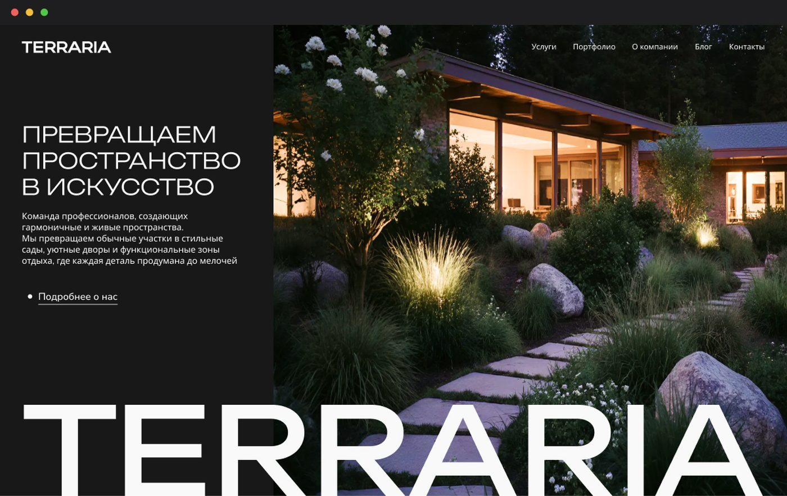

Вводные
Концепт корпоративного сайта для студии ландшафтного дизайна. В рамках проекта я провела анализ конкурентов, собрала визуальные референсы, разработала карту сайта и прототипы ключевых страниц, после чего проработала три визуальные концепции и на основе выбранного направления собрала финальные экраны.
Задача
Нужно было определить структуру и визуальное направление будущего сайта, которое позволило бы раскрыть характер студии, её проекты и услуги, а также выстроить понятный пользовательский путь.
Процесс
1. Анализ конкурентов. Изучила сайты студий в сфере ландшафтного дизайна и смежных архитектурных направлений, чтобы определить основные подходы к структуре, навигации и подаче контента.
2. Поиск визуального направления. Собрала референсы и сформировала несколько возможных направлений по типографике, композиции, работе с изображениями и визуальному ритму.
3. Информационная архитектура. Разработала карту сайта и определила основные разделы и взаимосвязи между ними.
4. Прототипирование. Создала прототипы ключевых страниц, проработав структуру контента, навигацию и основные пользовательские сценарии.
5. Концепции. Разработала три визуальные концепции, которые по-разному раскрывали характер студии и возможную стилистику будущего сайта.
6. Финальный дизайн. На основе выбранного направления собрала финальные экраны и выстроила единый визуальный язык сайта.
Результат
В результате был разработан цельный концепт сайта — от исследования и формирования структуры до прототипирования, поиска визуального направления и финального UI.